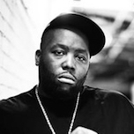
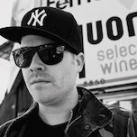

Michael Render (born April 20, 1975), better known by his stage name Killer Mike, is an American hip hop recording artist, activist, and occasional actor from Atlanta, Georgia. He is the founder of Grind Time Official Records, which he launched through the SMC and Fontana Distribution.
Jaime Meline (born March 2, 1975), better known by his stage name El-P (originally El Producto), is an American hip hop recording artist, record producer, rapper, and entrepreneur from Brooklyn, New York City. Originally a member of Company Flow, El-P has been a major driving force in alternative hip hop for more than two decades.
